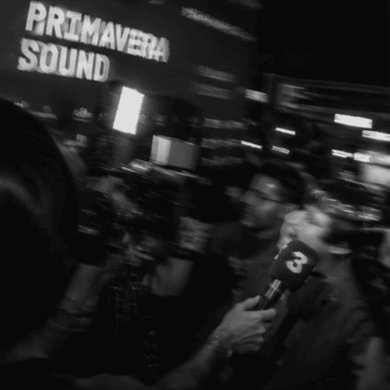
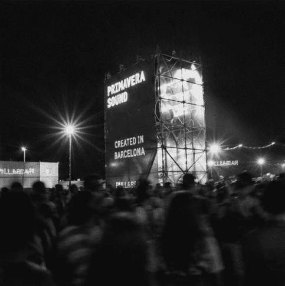
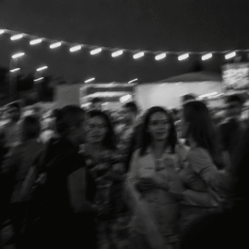
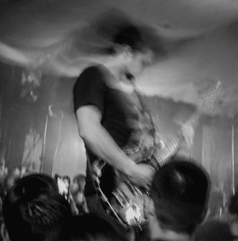
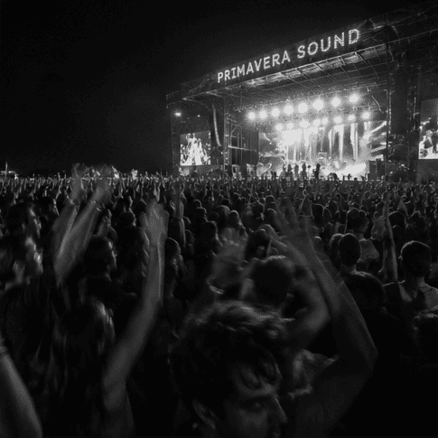

Últimas novedades
Descubre información sobre el festival, los artistas, eventos y todas las novedades relacionadas con uno de los festivales más esperados.
El impacto económico, social y mediático de Primavera Sound Barcelona 2026

El eco de todo lo acontecido en Primavera Sound Barcelona 2026 todavía resuena. Fueron 287.000 asistentes llegados de 145 países para agotar todas las entradas y congregarse alrededor de 320 actuaciones. 307 artistas y bandas que construyeron un cartel paritario en cuanto a género (42% de mujeres, 41% de hombres, 15% de proyectos mixtos y 1% de artistas no binarios). Un despliegue posible gracias a la labor de más de 9.000 trabajadores y que tuvo su epicentro en los 280.000 metros cuadrados del recinto del Parc del Fòrum.
El estudio de Camaleonic Analytics recoge también el valor contingente de Primavera Sound Barcelona, es decir, el valor económico que la sociedad asigna al festival más allá de su impacto económico directo. Según una estimación que tiene en cuenta el porcentaje de población residente en Barcelona interesada en el evento y la disposición a pagar (DAP) de esa población interesada, Primavera Sound genera un valor social estimado de 13 millones de euros, reflejando el beneficio cultural, reputacional y de bienestar que la sociedad le atribuye tras la celebración de su 24ª edición.
Primavera Pro refuerza su papel como espacio clave para generar conexiones estratégicas y anuncia nueva etapa en el DHub
Con más de 3.000 profesionales acreditados procedentes de 66 países, Primavera Pro ha celebrado con éxito su 17ª edición en el Centre de Cultura Contemporània de Barcelona. Durante tres días, el encuentro profesional de Primavera Sound Barcelona ha convertido el CCCB en un punto neurálgico para la industria musical internacional: un espacio para debatir, reflexionar y compartir conocimiento, además de analizar tanto la realidad actual del sector como los desafíos que marcarán su futuro.
Una 17ª edición que ha vuelto a demostrar la capacidad del encuentro para reunir a profesionales de todo el mundo sin perder de vista el tejido local, consolidándose como un hub internacional donde generar conexiones estratégicas y tomar el pulso a la industria a través de un programa de conferencias y showcases de referencia.

Primavera Sound Barcelona celebra la diversidad sonora catalana y vuelve a reunir el mejor talento local en su 24ª edición

La 24ª edición de Primavera Sound Barcelona reafirma su compromiso con el ecosistema musical local a través de una programación que reivindica la variedad estilística y sonora del territorio catalán. Del 1 al 7 de junio, junto a grandes nombres internacionales, también se podrá escuchar una representación de artistas catalanes, desde grandes figuras globales hasta artistas en proyección. Aprovechando que el festival es una cita clave dentro del calendario musical global, Primavera Sound Barcelona se consolida también como un escaparate privilegiado para el talento de aquí: una oportunidad para que el público local y también internacional descubra nuevas propuestas con base en Catalunya e impulsar la proyección e internacionalización de estas bandas.
Es innegable que la electrónica y la música de club también forman parte del ADN del territorio. Por este motivo, no faltarán figuras como Marc Piñol, clave en la escena de club barcelonesa con un repertorio 360º; Safety Trance, con su sonido industrial y reggaetón deconstruido; Malena, nacida en Argentina y afincada en Barcelona, con sets donde se funden influencias latinoamericanas y electrónica contemporánea; o M8NSE, artista y DJ chilena asentada en Barcelona, que hará bailar a todo el Parc del Fòrum a ritmo de latin club.
Primavera Pro 2026: tres días para repensar la industria musical, conectar y descubrir talento
Del 3 al 5 de junio, Primavera Pro celebrará su 17ª edición en el CCCB y convertirá la ciudad de Barcelona en un espacio de referencia donde conversar, debatir y reflexionar sobre el estado actual y futuro de un sector, el de la industria musical, en constante transformación. Coincidiendo con la semana de Primavera Sound, el encuentro congregará a más de 3.000 acreditados, entre artistas, sellos, agencias, promotores y profesionales de empresas de referencia, que compartirán experiencias y perspectivas en un programa que abordará cuestiones como la nueva economía musical, las identidades culturales, la evolución de la relación entre artistas y audiencias, los nuevos modelos de directo o la gestión de derechos en la era de la inteligencia artificial.
La programación de conferencias irá acompañada de una cuidada selección de showcases de artistas de todo el mundo que están a punto de dar el salto internacional. Estos conciertos gratuitos reunirán a las nuevas promesas de la escena musical global, como parte de Primavera a la Ciutat. Los showcases tendrán lugar en el Pati de les Dones del CCCB de miércoles a viernes a partir de las 13:30h y reunirán a 22 bandas procedentes de países como Argentina, Corea del Sur, Estados Unidos, Irlanda, México o el Reino Unido.

Primavera a la Ciutat 2026: horarios y detalles de las reservas para la programación de conciertos paralela al festival
Las reservas están asociadas a un depósito de 15 € retornable automáticamente en caso de asistencia. En caso de no asistir, ese importe será destinado íntegramente a diferentes proyectos sin ánimo de lucro de la Fundació Primavera Sound y otras iniciativas con las que colabora Primavera Sound como la Fundació La Loma Horse Home. El plazo de reservas estará disponible a través de la app AccessTicket desde el 14 de abril (12:00 CEST) para poseedores de acreditaciones Primavera Pro Premium, desde el 15 de abril para poseedores de acreditaciones Primavera Pro Basic compradas antes del anuncio del cartel (10:00 CEST) y desde el 16 de abril (12:00 CEST) para poseedores de acreditaciones Primavera Pro Basic.
Además, el 17 de abril (12:00 CEST) se pondrá a la venta en Fever un cupo de entradas específicas para cada concierto de la programación para público general.
Los conciertos que se celebrarán en el Pati de les Dones del CCCB, que forman parte de la programación de música en vivo de Primavera Pro integrada en Primavera a la Ciutat, serán de acceso libre y totalmente gratuito.
Primavera Pro presenta la programación completa de su 17ª edición, con más de un centenar de ponentes internacionales
Primavera Pro presenta la programación completa de su 17ª edición e incorpora a su cartel de conferencias más de una cuarentena de ponentes internacionales líderes de la industria musical, superando el centenar de participantes en su cartel. Coincidiendo con la semana de Primavera Sound Barcelona, el evento aterrizará en el CCCB del 3 al 5 de junio para convertirse en un espacio de referencia donde conversar, debatir y reflexionar sobre el estado actual y futuro de un sector en constante transformación. Con este anuncio, el encuentro cierra su programa de conferencias y actividades profesionales, que se suma a los 22 showcases de libre acceso ya confirmados.
A lo largo de tres jornadas, se abordarán temas como la nueva economía musical y el papel de las identidades culturales; el songwriting como intercambio entre culturas; las nuevas formas de relación entre artistas y público; la exploración de nuevos modelos de directo, así como los retos en la gestión de derechos y la sincronización en un ecosistema dominado por la IA. Estas cuestiones se analizarán de la mano de profesionales de compañías clave en el sector como Sony Music Publishing, Rimas Nation, Mavin Records, Domino Music, AEG Presents o True Panther.
